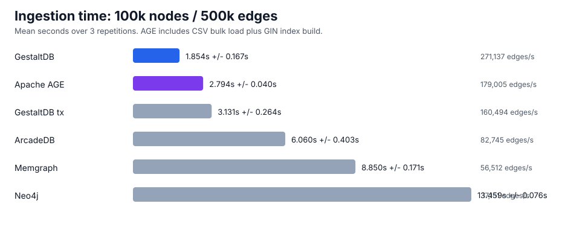
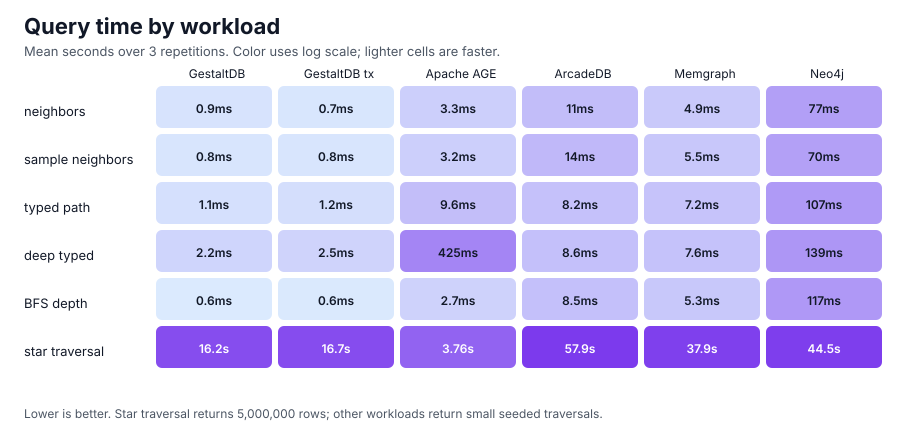

Performance and Benchmarks¶
GestaltDB includes benchmark scripts for ingestion, traversal, sampling, RocksDB tuning, and external graph database comparisons. Treat the included results as directional examples, not universal claims.
Practical Recommendations¶
For the library as it exists today, choose ingestion and storage options by the shape of the workload rather than by a single global default:
Use
PyRexStore/RocksDB for large append-only loads, columnar ingestion, and write-heavy workloads where native batch writes and RocksDB tuning matter.Use
PyRexStore(transactional=True)only when graph-level RocksDB transactions are required. The transaction-capable backend currently cannot use PyRex’s native columnar writer, so append-only bulk loads should usually keep the default RocksDB backend.Use
LevelDBStorefor simple local graphs, predictable installs throughplyvel, and workloads where the graph is small enough that Python object construction dominates storage I/O.Use
LMDBStorewhen you want LMDB’s mature embedded storage model and can sizemap_sizeahead of loading. LMDB is not the optimized path for the current Arrow/Polars native columnar ingestion work.Prefer
JSONSerializerwith Polars or Arrow entity-column ingestion when data starts as tabular JSON-compatible columns. This avoids constructingNodeandEdgeobjects per row and can move payload construction into Polars’ vectorized JSON encoder.Prefer pre-serialized
node_valueandedge_valuecolumns when upstream data already has serializer-compatible payload bytes. This isolates the backend write path and avoids repeated serialization in GestaltDB.Use
IndexMaintenanceMode.MAINTAINfor incremental writes or when indexed queries must be valid immediately after each ingestion call.Use
IndexMaintenanceMode.DEFERwhen the write window matters most and you can explicitly callGraphDB.rebuild_deferred_indexes()before indexed queries.Use
IndexMaintenanceMode.DEFER_REBUILDas the safest bulk-load convenience mode: it defers secondary-index writes during ingestion and rebuilds stale indexes before returning.
The important deferred-index trade-off is latency placement. Deferring index maintenance can make the write phase much faster, but a full rebuild still has to scan stored graph records. If you include an immediate rebuild in the same timed operation, total wall-clock time may be higher for some graph sizes and index sets. The current implementation is best viewed as a way to shorten the critical write window and make index rebuilding explicit and safe, not as a universal end-to-end speedup.
Install Benchmark Dependencies¶
python -m pip install -e ".[leveldb,rocksdb,fast-ingest]"
Backend Benchmarks¶
Use benchmarks.py for a quick backend comparison on the same append-only
workload.
python benchmarks.py --backend leveldb --nodes 20000 --edges 100000 --batch-size 10000 --append-only
python benchmarks.py --backend rocksdb --nodes 20000 --edges 100000 --batch-size 10000 --append-only
python benchmarks.py --backend rocksdb --nodes 20000 --edges 100000 --batch-size 10000 --append-only --rocksdb-transactional
Use scripts/benchmark_matrix.py for larger matrix runs across graph sizes,
backends, core counts, and ingestion modes.
uv run python scripts/benchmark_matrix.py \
--sizes 10000 100000 1000000 \
--edge-multiplier 1 \
--cores 1 2 4 \
--backends leveldb rocksdb \
--ingestion-modes object arrow polars \
--chunk-size 100000 \
--samples 1000 \
--sample-size 5 \
--output-dir benchmark_results/matrix_YYYYMMDD
The matrix writes CSV and JSONL outputs and reopens the database before traversal workloads so traversal does not only measure Python-side object state.
To compare default RocksDB with transaction-capable RocksDB on a 5 edges/node shape:
python scripts/benchmark_matrix.py \
--backends rocksdb \
--rocksdb-configs parallel-buffer64mb-bloom10 parallel-buffer64mb-bloom10-transactional \
--sizes 10000 100000 \
--edge-multiplier 5 \
--cores 4 \
--ingestion-modes arrow polars \
--serializer pickle \
--chunk-size 10000 \
--samples 100 \
--sample-size 5 \
--output-dir benchmark_results/transactions_rocksdb_YYYYMMDD
Columnar Ingestion Benchmarks¶
Columnar ingestion accepts already-serialized node and edge payloads. With
PyRexStore and pyrex-rocksdb>=0.4.1, RocksDB can use PyRex’s native
write_columnar_batch path. When Arrow-backed string or binary arrays are
passed, GestaltDB preserves those arrays through chunking and passes value
columns directly to PyRex instead of materializing Python bytes for every
stored value.
Structured JSON Entity Ingestion¶
For JSONSerializer workloads, use the structured entity helpers to build
node and edge payloads from Polars or Arrow columns. GestaltDB uses Polars
struct JSON encoding to serialize the payload column outside the Python
row loop, then sends the resulting Arrow binary values through the native PyRex
columnar write path when available.
import polars as pl
from gestaltdb.graphdb import GraphDB
from gestaltdb.kvstores import PyRexStore
from gestaltdb.serializers import JSONSerializer
graph = GraphDB(PyRexStore(path="graph_rocksdb"), JSONSerializer())
nodes = pl.DataFrame({
"node_id": ["drug-1", "protein-1"],
"labels": [["Drug"], ["Protein"]],
"kind": ["drug", "protein"],
})
graph.ingest_nodes_polars_entities(
nodes,
property_columns=["kind"],
)
edges = pl.DataFrame({
"edge_id": ["d1-p1"],
"source": ["drug-1"],
"target": ["protein-1"],
"edge_type": ["binds"],
"score": [0.9],
})
graph.ingest_edges_polars_entities(
edges,
property_columns=["score"],
)
This path is most useful when Python serialization dominates ingestion time.
It avoids constructing Node and Edge objects per row for JSON-compatible
payloads. Non-JSON serializers still work through the same methods, but they
fall back to Python object serialization so they do not get the same
serialization speedup.
Arrow inputs can use the same optimized JSON path when Polars is installed:
import pyarrow as pa
graph.ingest_nodes_arrow_entities(
pa.array(["n1", "n2"]),
labels=pa.array([["Entity"], ["Entity"]]),
properties={"kind": pa.array(["drug", "protein"])},
)
graph.ingest_edges_arrow_entities(
pa.array(["e1"]),
pa.array(["n1"]),
pa.array(["n2"]),
pa.array(["binds"]),
properties={"score": pa.array([0.9])},
)
See notebooks/05_columnar_ingestion_benchmark.ipynb for a runnable example.
Representative rates for 10,000 nodes, 50,000 edges, and batch size 10,000:
Mode |
Node rate |
Edge insert rate |
|---|---|---|
LevelDB object batch |
1,110,296/s |
167,463 edges/s |
RocksDB Arrow columnar native |
1,035,690/s |
265,050 edges/s |
RocksDB Polars columnar native |
929,044/s |
250,517 edges/s |
Larger append-only workloads with pre-serialized columnar payloads are expected to benefit more than small runs dominated by Python object construction.
End-to-End Ingestion Insights¶
notebooks/06_end_to_end_ingestion_benchmark.ipynb measures serialization plus
ingestion. The results below use 100,000 nodes, 500,000 edges, batch size 10,000,
JSONSerializer, RocksDB native columnar ingestion, WAL enabled, RocksDB
parallelism 4, and a 64 MiB write buffer. Dataset generation and database
setup/cleanup are excluded.
Case |
Isolates |
Serialization |
Ingestion |
Rebuild |
Total |
|---|---|---|---|---|---|
LevelDB + Python JSON |
baseline backend |
0.882 s |
3.066 s |
0.000 s |
3.948 s |
RocksDB + Python JSON |
RocksDB backend |
0.916 s |
2.484 s |
0.000 s |
3.400 s |
RocksDB + Polars JSON |
serialization path |
0.494 s |
2.400 s |
0.000 s |
2.894 s |
RocksDB + Polars, maintain indexes |
inline indexes |
n/a |
12.269 s |
0.000 s |
12.269 s |
RocksDB + Polars, defer then rebuild |
deferred indexes |
n/a |
1.407 s |
12.973 s |
14.380 s |
The same run showed these relative results:
Comparison |
Result |
|---|---|
RocksDB vs LevelDB, same Python JSON path |
1.16x faster total |
RocksDB vs LevelDB, ingestion/write phase only |
1.23x faster write phase |
Polars JSON vs Python JSON serialization on RocksDB |
1.86x faster serialization |
Polars JSON vs Python JSON end-to-end on RocksDB |
1.17x faster total |
Deferred index write phase vs inline index maintenance |
8.72x faster write phase |
Deferred index plus rebuild vs inline index maintenance |
17.2% higher total time |
Interpretation:
RocksDB’s native columnar path helped the write phase on the measured workload, but the total gain was moderate because serialization was still a large share of wall-clock time.
Polars JSON payload construction reduced serialization time substantially for JSON-compatible tabular inputs.
Deferring index construction shifted work out of the write phase. This is useful when ingestion must complete quickly before a later rebuild step, but it was not faster end-to-end when the rebuild was performed immediately for this 100k node and 500k edge subset with node indexes on
kindandgroupplus an edge index onweight.Benchmark your actual graph shape and index set before promising absolute speedups. The fastest mode for append-only writes is not always the fastest mode for ingest-plus-query-ready indexes.
Transaction-Capable RocksDB Benchmark¶
PyRexStore(transactional=True) opens RocksDB through PyRex’s
TransactionDB support. It provides graph-level transactions through
GraphDB.transaction(), and regular direct writes still work through the same
public GestaltDB APIs. The trade-off is that PyRex 0.4.1 exposes native
write_columnar_batch on PyRocksDB but not on TransactionDB. The
transaction-capable backend therefore falls back to Python PyWriteBatch paths
for columnar ingestion.
The table below reports write-phase times for 5 edges per node, RocksDB
parallelism 4, max_background_jobs=4, a 64 MiB write buffer, Bloom filters,
Pickle payloads, and chunk size 10,000.
Nodes / edges |
Mode |
RocksDB backend |
Native columnar |
Node write |
Edge write |
|---|---|---|---|---|---|
10,000 / 50,000 |
Arrow |
default |
yes |
0.041 s |
0.185 s |
10,000 / 50,000 |
Arrow |
transaction-capable |
no |
0.049 s |
0.345 s |
10,000 / 50,000 |
Polars |
default |
yes |
0.046 s |
0.187 s |
10,000 / 50,000 |
Polars |
transaction-capable |
no |
0.050 s |
0.343 s |
100,000 / 500,000 |
Arrow |
default |
yes |
0.457 s |
1.886 s |
100,000 / 500,000 |
Arrow |
transaction-capable |
no |
0.540 s |
3.623 s |
100,000 / 500,000 |
Polars |
default |
yes |
0.429 s |
1.828 s |
100,000 / 500,000 |
Polars |
transaction-capable |
no |
0.545 s |
3.670 s |
The object-path benchmark with 20,000 nodes and 100,000 append-only edges measured 77,571 edges/s on default RocksDB versus 64,649 edges/s on transaction-capable RocksDB. Treat this as the expected cost of opening the backend in transaction-capable mode, not the cost of wrapping a large write in one user transaction.
Operational guidance:
Use default
PyRexStorefor reloadable bulk loads and columnar append-only ingestion.Use
PyRexStore(transactional=True)when mutations must be atomic across nodes, edges, adjacency, secondary indexes, and metadata.If transaction-capable bulk ingestion needs native columnar throughput, PyRex should expose
TransactionDB.write_columnar_batchso GestaltDB can keep the same fast path in transactional mode.
RocksDB Tuning and Compaction Benchmarks¶
Use scripts/tune_rocksdb.py for a small RocksDB tuning matrix against a
LevelDB baseline.
python scripts/tune_rocksdb.py --nodes 20000 --edges 100000 --batch-size 10000
Use scripts/benchmark_rocksdb_compaction.py for a repeated-overwrite workload
that creates compaction pressure.
uv run python scripts/benchmark_rocksdb_compaction.py \
--configs leveldb rocksdb-p1-bg1-smallbuf rocksdb-p4-bg4-smallbuf rocksdb-p8-bg8-smallbuf rocksdb-p4-bg4-largebuf \
--keys 250000 \
--passes 6 \
--batch-size 5000 \
--value-size 1024 \
--output-dir benchmark_results/compaction_pressure_YYYYMMDD
Representative compaction-pressure result:
Configuration |
Backend |
Initial write rate |
Overwrite avg rate |
Final SSTs |
|---|---|---|---|---|
LevelDB |
LevelDB |
329,433 writes/s |
114,663 writes/s |
30 |
RocksDB p1/bg1 small buffer |
RocksDB |
694,105 writes/s |
262,405 writes/s |
14 |
RocksDB p4/bg4 small buffer |
RocksDB |
1,008,871 writes/s |
749,948 writes/s |
47 |
RocksDB p8/bg8 small buffer |
RocksDB |
987,248 writes/s |
772,436 writes/s |
17 |
RocksDB p4/bg4 large buffer |
RocksDB |
1,088,475 writes/s |
1,132,815 writes/s |
7 |
This workload favors RocksDB because it creates overlapping sorted runs that can benefit from background compaction parallelism. It should not be generalized to all graph workloads.
External Graph Database Benchmarks¶
Use scripts/benchmark_external_graphdbs.py to compare GestaltDB/RocksDB with
Neo4j, Memgraph, ArcadeDB, and Apache AGE on the same deterministic graph shapes.
The runner reports ingestion and query phases separately and validates loaded node
and edge counts before comparing query timings.
Ingestion paths differ by engine:
GestaltDB uses Arrow/Polars entity ingestion into RocksDB.
Neo4j and Memgraph use batched Cypher over Bolt.
ArcadeDB uses the embedded
GraphBatchAPI.Apache AGE uses its CSV bulk loader for ingestion and
cypher()through PostgreSQL for queries. AGE benchmark ingestion includes building a GIN property index onNode.propertiesso seedednode_idlookups use AGE’s PostgreSQL-backed indexing path.
Traversal workloads use each engine’s query interface. GestaltDB uses
GraphDB.query() for neighbor expansion, star traversal, typed paths, and the
deeper typed traversal. bfs_depth is a client-side BFS loop over typed neighbor
queries for every engine.
Install the optional benchmark dependencies:
uv sync --extra fast-ingest --extra external-bench
Representative full comparison:
uv run python scripts/benchmark_external_graphdbs.py \
--engines gestaltdb gestaltdb-tx neo4j memgraph arcadedb age \
--workloads columnar_ingest neighbors sample_neighbors star_traversal bfs_depth typed_path deep_typed_query \
--nodes 100000 \
--edges 500000 \
--batch-size 10000 \
--iterations 10 \
--repetitions 3 \
--age-require-index \
--output-dir benchmark_results/external_graphdbs_100k
Generate the documentation plots from one or more summary files:
python scripts/plot_external_graphdbs.py \
benchmark_results/external_graphdbs_100k/external_graphdbs_summary.jsonl \
--output-dir docs/_static
100k Node Results¶
These results use 100,000 nodes, 500,000 edges, batch size 10,000, 10 traversal seeds, sample size 5, depth 3, and three repetitions. All rows validated exactly 100,000 nodes and 500,000 edges. Tables report mean ± standard deviation.


Ingestion phase from the columnar_ingest workload:
Engine |
Ingest seconds |
Edge ingest rate |
Relative to GestaltDB |
|---|---|---|---|
GestaltDB/RocksDB |
1.854 ± 0.167 s |
271,137 edges/s |
1.00x |
GestaltDB/RocksDB transactional |
3.131 ± 0.264 s |
160,494 edges/s |
1.69x slower |
Apache AGE |
2.794 ± 0.040 s |
179,005 edges/s |
1.51x slower |
ArcadeDB embedded |
6.060 ± 0.403 s |
82,745 edges/s |
3.27x slower |
Memgraph |
8.850 ± 0.171 s |
56,512 edges/s |
4.77x slower |
Neo4j |
13.459 ± 0.076 s |
37,151 edges/s |
7.26x slower |
Query phase on the already-loaded graph:
Workload |
Result count |
GestaltDB |
GestaltDB tx |
Apache AGE |
ArcadeDB |
Memgraph |
Neo4j |
|---|---|---|---|---|---|---|---|
neighbors |
17 |
0.000901 ± 0.000334 s |
0.000743 ± 0.000011 s |
0.00333 ± 0.000471 s |
0.0107 ± 0.0106 s |
0.00494 ± 0.00122 s |
0.0773 ± 0.00306 s |
sample_neighbors |
17 |
0.000753 ± 0.000052 s |
0.000764 ± 0.000008 s |
0.00324 ± 0.000758 s |
0.0143 ± 0.00717 s |
0.00554 ± 0.000167 s |
0.0702 ± 0.00218 s |
star_traversal |
5,000,000 |
16.172 ± 0.215 s |
16.738 ± 1.020 s |
3.762 ± 0.058 s |
57.905 ± 0.828 s |
37.946 ± 0.231 s |
44.500 ± 0.444 s |
bfs_depth |
3 |
0.000575 ± 0.000009 s |
0.000599 ± 0.000005 s |
0.00271 ± 0.000419 s |
0.00848 ± 0.00359 s |
0.00528 ± 0.000744 s |
0.117 ± 0.00726 s |
typed_path |
125 |
0.00107 ± 0.000010 s |
0.00120 ± 0.000040 s |
0.00964 ± 0.00160 s |
0.00816 ± 0.000979 s |
0.00722 ± 0.00141 s |
0.107 ± 0.00122 s |
deep_typed_query |
105 |
0.00221 ± 0.000073 s |
0.00245 ± 0.000016 s |
0.425 ± 0.00626 s |
0.00859 ± 0.00120 s |
0.00762 ± 0.00206 s |
0.139 ± 0.00373 s |
Notes:
GestaltDB remains fastest on ingestion in this setup. AGE uses PostgreSQL-visible CSV files, AGE’s bulk load functions, and a post-load GIN property index on
Node.properties; the AGE ingest time includes that index build.GestaltDB’s traversal timings are dominated by embedded typed-adjacency prefix scans. Server engines pay query execution and client/server costs for the small seeded traversals.
Apache AGE is fast on the star traversal because the query streams one large hub expansion efficiently. The seeded AGE workloads require the
Node.propertiesGIN index; without it,node_idpredicates can devolve into label scans and produce invalidly pessimistic timings.reopen_secondsand count validation are recorded separately in summary files and are not included in query timings.
Benchmark Caveats¶
Local benchmark results depend on graph shape, storage device, CPU settings, Python version, backend versions, and warm-up behavior.
Small graphs can be dominated by Python object construction, serialization, and key construction rather than backend I/O.
Prefer raw CSV/JSONL outputs for comparisons and keep benchmark parameters with published results.